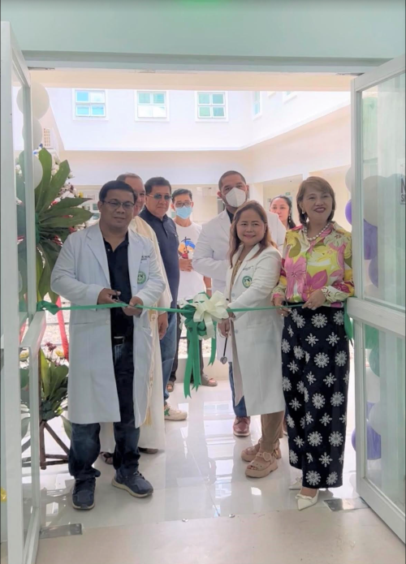
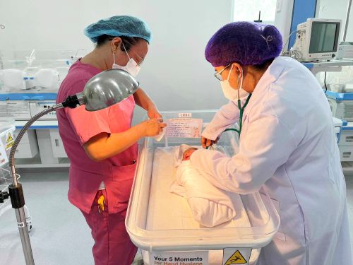

NEWS AND UPDATES
-1.png)
-2.png)
Guimaras Specialist Medical Center, Inc. - Updates
We are thrilled to announce several updates at Guimaras Specialist Medical Center, Inc. (GSMCI) designed to enhance your healthcare experience:
1. Expanded Services:
● New Hemodialysis Department: Guimaras Specialist Medical Center,
Inc. (GSMCI) is proud to announce the
opening of its new Hemodialysis Department, a testament to our
commitment to providing comprehensive and advanced healthcare services
to the community. This state-of-the-art department represents a
significant investment in expanding our capabilities and offering
specialized care for patients with kidney disease.
● Enhanced Imaging Services:
Guimaras Specialist Medical Center,
Inc. (GSMCI) is committed to providing
patients with the most advanced and comprehensive diagnostic imaging
services. Our Imaging Department has undergone significant
enhancements, incorporating state-of-the-art technology and expanding
our capabilities to offer a wider range of services.
2. Improved Technology:
● Online Appointment Scheduling: You can now conveniently schedule
appointments online through our website www.gsmci.com. This eliminates
the need for phone calls and allows for greater flexibility.
3. Enhanced Patient Care:
● Dedicated Patient Navigator: We have implemented a dedicated patient
navigator program to guide you through your healthcare journey. Our
navigators will provide personalized support, answer questions, and
ensure a smooth and positive experience.
4. Community Engagement:
● Health Education Workshops: We are committed to promoting health and
wellness in our community. We will be hosting free health education
workshops on various topics throughout the year. Stay tuned for
announcements on our website and social media channels.
We are dedicated to providing you with the highest quality healthcare
in a comfortable and compassionate environment. We invite you to
experience the difference at Guimaras Specialist Medical Center, Inc.
Events

GSMCI promotes wellness with Nutrition Month initiatives
GSMCI participated in 51st National Nutrition Month, promoting
nutritional awareness and sustainable food systems. Hospital
Nutritionist-Dietitian Emma Ross Navida led initiatives, distributed
samples, and discussed malnutrition strategies.
Read more...

CPU Biology interns complete on-the-job training at GSMCI
Twelve BS Biology students completed 260-hour on-the-job training at
Guimaras Specialist Medical Center, Inc., gaining practical experience
in the hospital's Pathology and Laboratory Medicine Department,
attended by President and staff.
Read more...

GSMCI partners with Red Cross for successful blood donation activity
GSMCI, in partnership with the Philippine Red Cross, organized a
bloodletting activity on July 14 to celebrate National Blood Donor's
Month, involving community groups like the Philippine Coast Guard and
Guardians Brotherhood.
Read more...

NSO spearheads "Backbone of the Operating Room" lectures to reinforce or values
The Nursing Service Office of Guimaras Specialist Medical Center, Inc.
held an in-service lecture on reinforcing the operating room's core
values, led by orthopedic and general surgeons, to enhance patient
care and staff morale, as part of their ongoing efforts.
Read more...

Expecting mother enjoy free maternity photoshoot, photoshoot at GSMCI Mother's Class
Guimaras Specialist Medical Center, Inc. held a free maternity
photoshoot and photobooth session on May 24, 2025, as part of its
Mother's Class program, facilitated by Highfive Photobooth Iloilo, to
celebrate motherhood and community support.
Read more...

GSU interns successfully complete OJT at GSMCI administrative offices
Guimaras State University graduates completed 600 hours of on-the-job
training at Guimaras Specialist Medical Center, Inc., gaining
real-world experience in Financial Management, Human Resource
Management, and Marketing Management, aiming to support local
community growth.
Read more...

GSMCI NSO organizes poster-making contest to promote hand hygiene
Nurse Sheryl Daños led a poster-making contest on May 14, 2025, to
promote handwashing and infection control. Hospital staff collaborated
on visuals, winning Entry #3 "Clean Hands, Healthy Planet." The
initiative educates on proper techniques and the positive effects of
hand hygiene.
Read more...

Opening Of Dialysis Center
The opening of GSMCI Dialysis Center was a resounding success, marked
by a well-attended event and positive feedback from all who
participated. The event showcased the institution's commitment to
excellence and set astrong foundation for future endeavors.
We are happy to serve you.
Read more...
News

First Baby Born
Congratulations on the arrival of your precious little one! This is
the beginning of a beautiful new chapter in your lives, filled with
joy, love, and countless unforgettable moments. May your days be
filled with happiness as you embark on this incredible journey of
parenthood.
Read more...